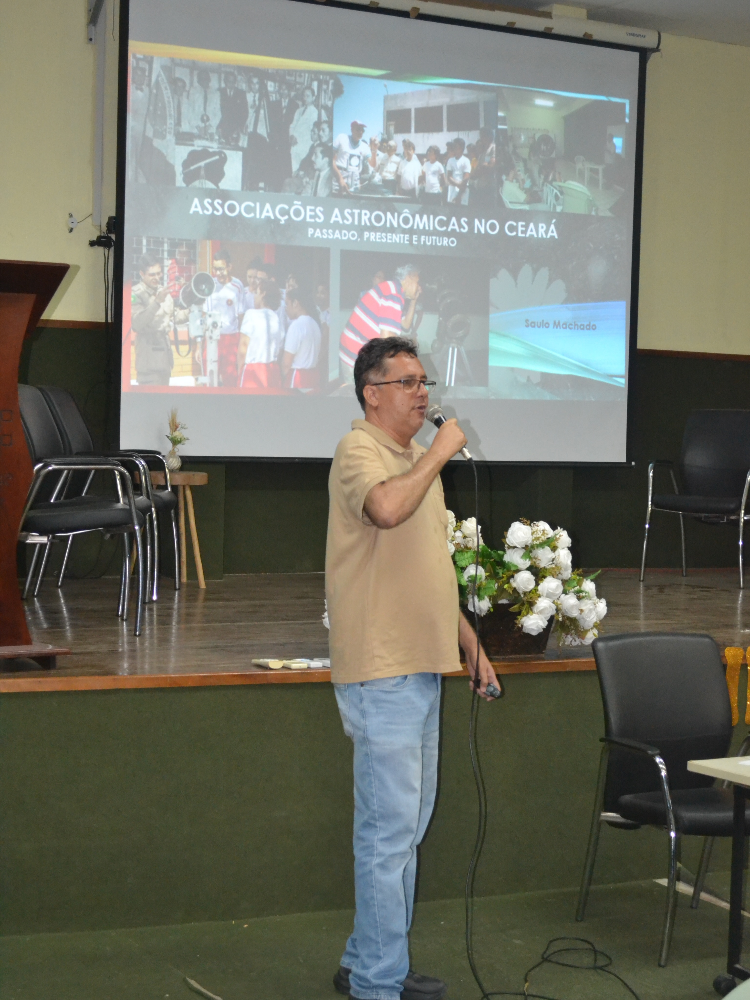
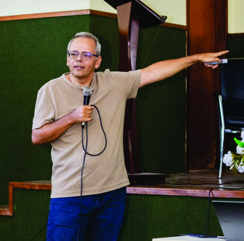
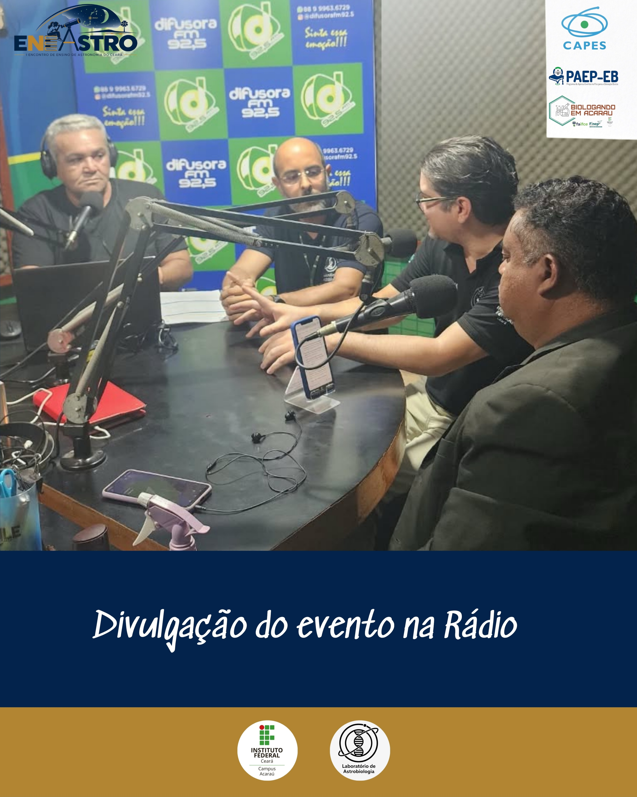
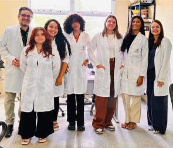
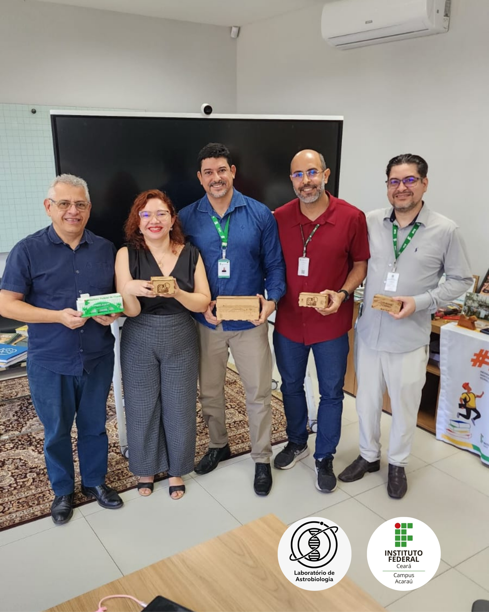
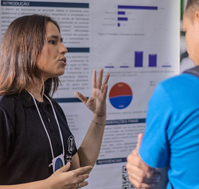

Extremófilos da Caatinga e do Litoral
O semiárido cearense e as salinas de Acaraú possuem forte radiação solar (UV), seca sazonal e alta salinidade. Estudamos como microrganismos nativos protegem seu DNA e sobrevivem a essas condições extremas.
IFCE Campus Acaraú · Litoral Oeste do Ceará
Reunimos estudantes e professores de Biologia e Física do IFCE Campus Acaraú para estudar microrganismos de ambientes extremos, desenvolver análises em bioinformática herdadas do LaTEB e aproximar a astronomia das escolas públicas junto ao Clube @cav.ifa.
Nosso trabalho nasce da parceria entre as licenciaturas em Ciências Biológicas e em Física do IFCE Acaraú, combinando coleta em campo, modelagem em computador e divulgação científica aberta à comunidade.
O semiárido cearense e as salinas de Acaraú possuem forte radiação solar (UV), seca sazonal e alta salinidade. Estudamos como microrganismos nativos protegem seu DNA e sobrevivem a essas condições extremas.
A partir da experiência acumulada no LaTEB, utilizamos árvores evolutivas, modelagem 3D de proteínas e algoritmos em Python para investigar a evolução molecular e selecionar exoplanetas potencialmente habitáveis.
Junto ao Clube de Astronomia (@cav.ifa) e à rede BRAMON, monitoramos meteoros no céu do litoral oeste, criamos experimentos de baixo custo com Arduino e levamos telescópios às escolas da região.
Nossa base computacional começou no LaTEB (Laboratório de Tecnologias Educacionais e Bioinformática). Hoje, com computadores de alto desempenho financiados pelo projeto Biologando em Acaraú (FINEP), nossos estudantes desenvolvem projetos que unem pesquisa e ensino.
Clique em uma das abas abaixo para ver como aliamos bioinformática, experimentação e formação de estudantes no dia a dia:
Microrganismos expostos ao sol forte do semiárido e de salinas costeiras dependem de enzimas como as fotoliases para reparar danos no DNA causados pela radiação ultravioleta. No laboratório, comparamos a estrutura tridimensional e a evolução dessas proteínas para entender como a vida resiste a ambientes extremos.
Passe o mouse (ou toque) sobre cada cidade marcada no mapa para ver o que nossa equipe apresentou em cada local, ou clique nos cartões abaixo para abrir a página completa do evento.
Realizado de 14 a 17 de outubro de 2026 no IFCE Campus Acaraú com o tema “Vida e Universo”, o I Encontro de Ensino de Astronomia do Ceará (I ENEASTRO) foi o primeiro grande evento planejado e realizado pela nossa equipe atual, integrando a VIII Semana da Biologia e o PIBID.
Coordenado pelos professores João Garcia Alves Filho e Jorge Roberto junto aos estudantes de Biologia e Física, o evento recebeu convidados como a presidente da SBAstrobio (Dra. Evelyn Sanchez), Tatiane Peters, Prof. Heliomárzio Moreira e Prof. Saulo Machado, além de sessões do Planetário ECO, oficinas e observação com telescópios.
Palestras sobre meteorítica e habitabilidade com pesquisadoras da SBAstrobio e UFRJ.
Conferências, minicursos práticos, sessões de planetário móvel e participação das escolas municipais.
Registros das nossas atividades no campus, entrevistas, reuniões e viagens para congressos.

I ENEASTROPalestra com o Prof. Saulo Machado Filho no auditório do IFCE Acaraú.

AstrofotografiaProf. Heliomárzio Moreira apresentando técnicas de captura do céu profundo para os estudantes.

Rádio Difusora 92.5Convite à comunidade do Baixo Acaraú para participar das atividades abertas do encontro.

Pesquisa no LabEstudantes e docentes em experimentos de astrobiologia e resposta fotossintética no campus.

Reitoria IFCEReunião com o Reitor Prof. Wally Menezes e a Pró-Reitora Prof.ª Joélia Marques para apoio ao laboratório.

XXIV EANE · AlagoasEstudantes de Física e Biologia na edição em que Acaraú foi escolhida sede do EANE 2029.
Consulte os principais trabalhos apresentados pela nossa equipe em eventos científicos e os projetos aprovados em editais de iniciação científica e tecnológica.
Nenhum trabalho encontrado para essa busca. Tente termos como "Bioinformática", "EANE", "USP" ou "LaTEB".
O Clube de Astronomia do IFCE Campus Acaraú (@cav.ifa) caminha lado a lado com o laboratório, levando telescópios, oficinas e observações gratuitas do céu noturno às escolas e praças do Baixo Acaraú.
Sessões abertas com telescópios no campus e em escolas públicas de Acaraú, Cruz, Itarema e Marco.
Registro contínuo de meteoros no litoral oeste cearense em parceria com a Rede Brasileira de Monitoramento de Meteoros.
Estudantes do IFCE Acaraú interessados em iniciação científica, bioinformática ou astronomia, assim como escolas e pesquisadores parceiros, são muito bem-vindos.
Entre em contato para parcerias, visitas escolares ou dúvidas sobre nossos projetos: